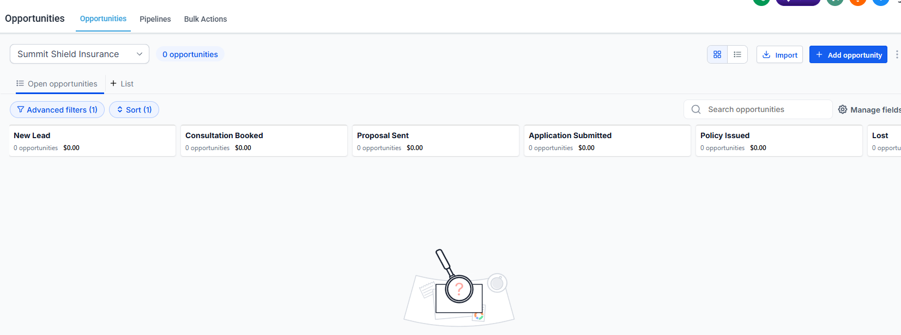
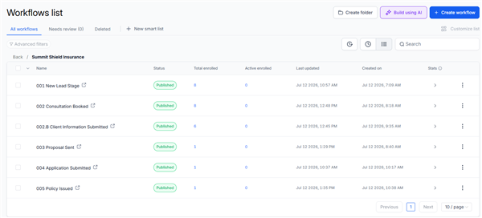
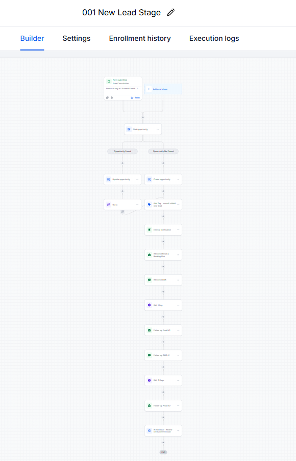
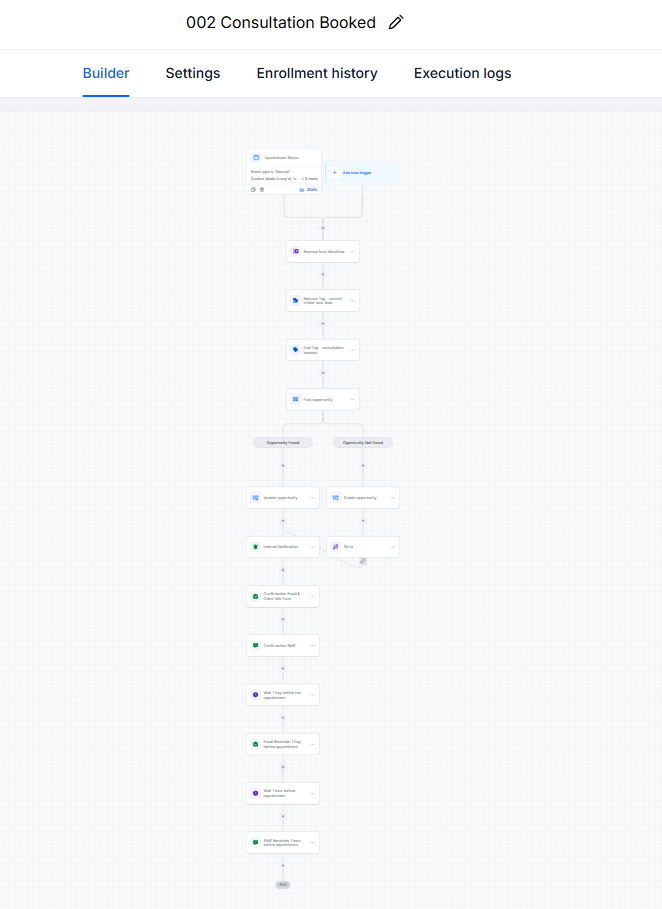
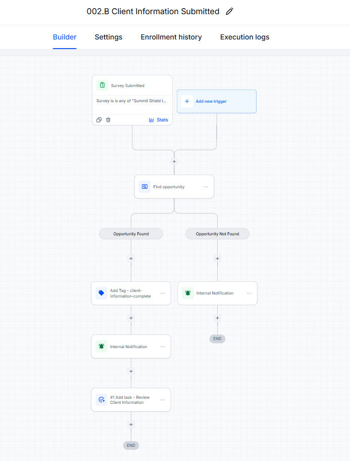
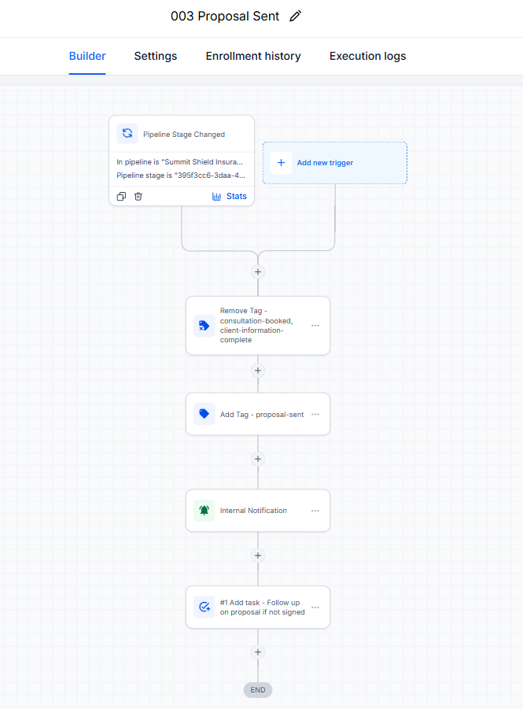
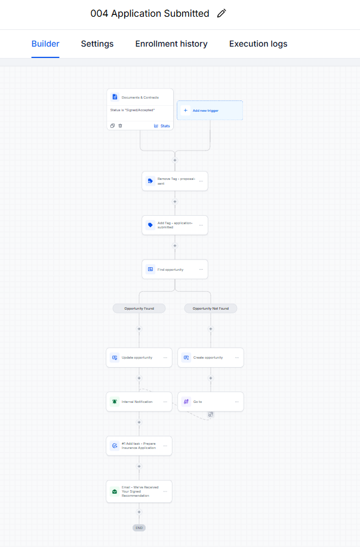
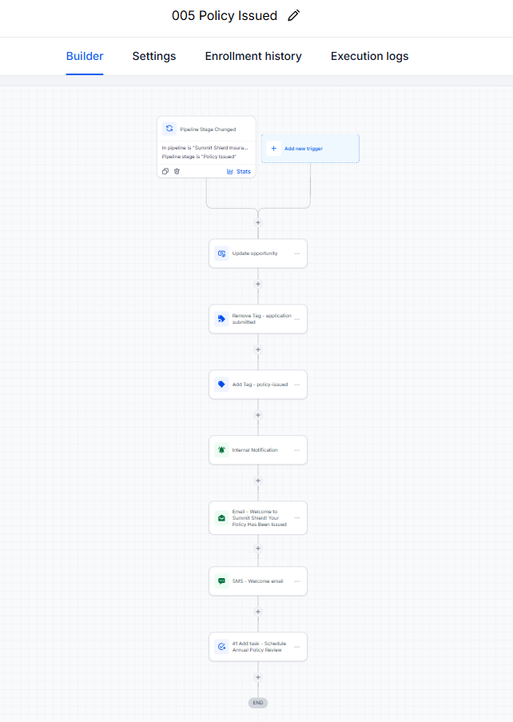

Summit Shield Insurance — a complete lead-to-policy system in GoHighLevel
One connected system takes an insurance prospect from first inquiry to consultation, proposal, application, and policy onboarding — while keeping the team informed at every handoff.
Insurance leads rarely disappear all at once. They leak out through small handoff gaps.
A prospect submits a form, books a consultation, shares sensitive application details, and waits for a decision. When those steps live across inboxes and memory, follow-up slows down and context gets lost. This demo connects the journey in one CRM so each milestone triggers the next action.
Five stages. One clear path from inquiry to coverage.
The pipeline mirrors the sales process, while a separate client-information workflow supports the Consultation Booked stage without adding a misleading extra pipeline step.

- New Lead — captures the inquiry, creates or updates the opportunity, and starts a structured follow-up sequence.
- Consultation Booked — confirms the appointment and sends timed reminders. The separate Client Information Submitted workflow tags the record, notifies the team, and creates a review task within this stage.
- Proposal Sent — updates lifecycle tags, alerts the team, and creates a proposal follow-up task.
- Application Submitted — advances or creates the opportunity, alerts the team, assigns preparation work, and acknowledges receipt.
- Policy Issued — closes the sales loop with onboarding communication and an annual policy-review task.
Six published workflows. This is the engine room.

Featured: 001 — New Lead speed-to-lead
A new form submission finds or creates the opportunity, applies the new-lead tag, alerts the team, and begins an email follow-up sequence over several days. The workflow turns a form fill into an owned, visible sales conversation.

Featured: 002 — Consultation Booked
When an appointment is booked, the system removes the new-lead tag, applies the consultation tag, finds or creates the opportunity, notifies the team, confirms the booking, and sends timed email and SMS reminders.

Featured: 002.B — Client Information Submitted
This is a separate workflow within the Consultation Booked stage. A submitted information form finds the opportunity, marks the client information complete, alerts the team, and assigns a review task. It tracks readiness without pretending the process has reached Proposal Sent.

The final three milestones

003 — Proposal Sent
Lifecycle tag updates, an internal alert, and a follow-up task keep the proposal moving.

004 — Application Submitted
Opportunity handling, team notification, preparation task, and a signed-document acknowledgment.

005 — Policy Issued
Updates the record, welcomes the new policyholder by email and SMS, and schedules annual review.
Same method. Your pipeline, your follow-up, your customer journey.
I map the handoffs, build the CRM, and automate the work that should not depend on memory.
Book a free call →